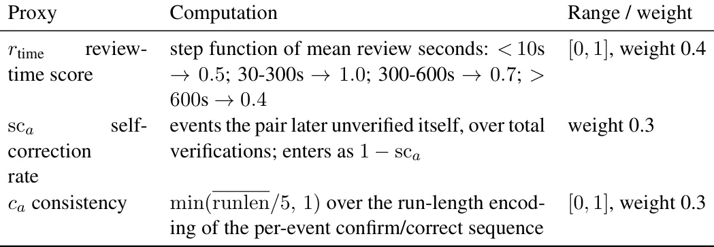
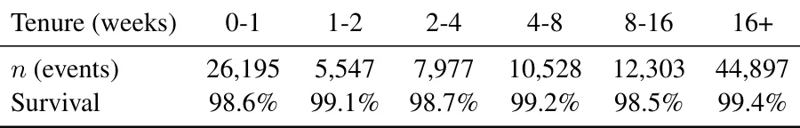
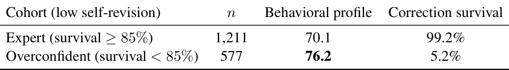

O Problema da Opacidade em Sistemas Híbridos
A integração de modelos estatísticos avançados com revisão humana tornou-se padrão em setores críticos como triagem médica, moderação de conteúdo e contabilidade assistida por IA. A arquitetura é simples: o modelo propõe uma decisão, o humano confirma ou corrige, e essas correções alimentam o próximo ciclo de treinamento. No entanto, à medida que os modelos melhoram, surge uma questão operacional incômoda: quando o humano concorda com o modelo em 71% dos casos, como saber quem ainda está agregando valor real ao sistema?
A intuição corporativa tende a valorizar indicadores de atividade e consistência. Mantemos os revisores que trabalham mais, que concordam com os pares, que estão há mais tempo na empresa ou que decidem rápido sem alterar o veredito. Esta abordagem é perigosa. Ela assume que a eficiência comportamental é sinônimo de competência cognitiva. O paper "Knowing What You Know" desmonta essa premissa, argumentando que a propriedade que governa o valor do revisor não é o quanto ele trabalha ou quão rápido decide, mas uma única característica cognitiva: a calibração metacognitiva.
A calibração metacognitiva, conceito da psicologia cognitiva, refere-se ao alinhamento preciso entre a confiança comportamental de um agente e a correção factual de seus julgamentos. Um revisor valioso é aquele que sabe o que sabe. Em um loop humano-IA, a distinção entre o especialista calibrado e o novato superconfiante é invisível a olho nu até que se observe o resultado. Ambos podem ser rápidos, decisivos e consistentes. A diferença reside exclusivamente na taxa de sobrevivência de suas correções iniciais.
A Teoria do Traço de Valor do Revisor
Os autores desenvolvem uma teoria de traço para tornar essa intuição precisa. A teoria é estruturada em cinco afirmações principais que redefinem como devemos entender a interação entre humano e máquina. A primeira afirmação é direta: o valor é governado pela calibração, e não por atividade, velocidade, acordo ou tempo de casa. Isso significa que métricas tradicionais de desempenho de funcionários são ruído estatístico quando aplicadas a sistemas de alta precisão.
A segunda afirmação estabelece que a calibração deixa rastros observáveis na telemetria comportamental. É possível medir tempo de resposta, taxa de revisão e consistência sem olhar para o resultado final. No entanto, a terceira afirmação introduz uma ressalva crucial: esses rastros são não diagnósticos por si só. A assinatura comportamental de um especialista calibrado (rápido, poucas revisões) é indistinguível da de um novato confiante (rápido, poucas revisões, mas errado). O comportamento não diz quem está certo; apenas diz quem está sendo decisivo.
A quarta afirmação propõe uma unificação conceitual poderosa: a calibração humana e o autoconhecimento do modelo (self-knowledge) são a mesma construção. Em termos técnicos, a confiança que o humano sente ao corrigir uma transação é análoga à probabilidade estimada que o modelo atribui à sua própria previsão. Isso reframa a divisão de trabalho não como uma hierarquia, mas como uma comparação de calibração item a item. O sistema deve deferir ao agente (humano ou IA) que estiver melhor calibrado para aquele caso específico.
A quinta e última afirmação trata da identificabilidade causal. A calibração individual só pode ser identificada causalmente acima do nível de um único julgamento. Ou seja, não podemos saber se um revisor específico é bom olhando para uma única ação; precisamos de agregação estatística. Isso prepara o terreno para as limitações que os autores discutem no final do paper, onde explicam por que a análise em nível individual tem fronteiras rigorosas.
Metodologia: O Laboratório de Contabilidade
Para testar essas afirmações, os autores utilizaram uma janela de produção de seis meses de um sistema de contabilidade assistido por IA. O conjunto de dados é robusto, contendo 541.621 eventos de revisão realizados por 483 revisores humanos. O domínio escolhido é adequado porque envolve regras claras e erros objetivos: categorização de transações financeiras. Isso permite uma avaliação precisa da "verdade fundamental" (ground truth) contra a qual a calibração é medida.
A métrica central do estudo é a "taxa de sobrevivência da correção" (correction survival). Se um revisor corrige a previsão do modelo, essa correção sobrevive se permanecer inalterada em ciclos subsequentes de validação ou auditoria. Uma alta taxa de sobrevivência indica que a correção inicial foi acertada. Uma baixa taxa indica que o revisor introduziu um erro ou corrigiu um acerto do modelo. Este é o sinal de ruído que a teoria tenta filtrar.
Para construir o "perfil de expertise" baseado apenas em comportamento, os autores definiram métricas de telemetria que não exigem conhecimento do resultado final. Estas incluem o tempo gasto na revisão, a taxa de revisão (quantas vezes o veredito foi alterado antes da submissão) e a consistência da resposta. O objetivo era replicar a heurística comum de gestão: usar sinais comportamentais para inferir competência. Se a teoria estiver certa, esse perfil comportamental deve falhar ao prever a qualidade real.

O Colapso das Heurísticas de Atividade
Os resultados empiricamente demonstram o fracasso das intuições gerenciais. Ao aplicar o perfil de expertise baseado em telemetria comportamental (Tabela 1 do paper), os autores observaram uma inversão completa da verdade. O perfil classificou um grupo de revisores superconfiantes como os mais expertos. No entanto, quando validado contra os resultados reais, a taxa de sobrevivência das correções desse grupo "top" foi de apenas 5,2%. Ou seja, 94,8% das vezes que eles acharam que estavam corrigindo o modelo, eles estavam errados.
Em contraste, o grupo classificado como menos eficiente pelo perfil comportamental apresentou uma taxa de sobrevivência de 99,2%. Esses eram os especialistas genuínos. Eles eram mais lentos, revisavam mais vezes antes de submeter e pareciam menos decisivos. O perfil comportamental, que deveria identificar a eficiência, identificou apenas a impulsividade. A velocidade e a baixa taxa de revisão são assinaturas da expertise apenas a posteriori; antes de saber o resultado, elas são apenas sinais de confiança, que pode ser bem fundamentada ou perigosamente infundada.
Este achado é crítico para a indústria. Sistemas que otimizam por produtividade (número de transações processadas por hora) ou consistência (baixa variação nas respostas) estão, paradoxalmente, premiando o erro sistemático. Um revisor que erra rapidamente e com confiança contamina o conjunto de dados de treinamento do modelo, pois o sistema aprende que aquela correção errada era a correta. A eficiência comportamental sem calibração é um vetor de contaminação de dados.
Calibração como Traço Estável, Não como Habilidade
Uma implicação profunda deste estudo é a natureza da calibração. Se a calibração fosse uma habilidade aprendida, esperaríamos ver uma curva de onboarding: revisores novos seriam mal calibrados e melhorariam com o tempo e a experiência no trabalho. Os autores testaram isso analisando a correlação entre o tempo de casa (tenure) e a qualidade da revisão (Tabela 2 do paper).
O resultado foi nulo. A qualidade da revisão, medida pela taxa de sobrevivência, é essencialmente plana em relação ao tempo de experiência. Revisores com anos de casa não são mais calibrados do que os novatos. Isso sugere que a calibração metacognitiva é um traço estável de personalidade ou capacidade cognitiva, não uma competência técnica adquirida na função. A experiência no trabalho não melhora a calibração; ela apenas expõe o revisor a mais dados, mas não altera a relação entre sua confiança e seu acerto.
Esta constatação tem implicações diretas para a gestão de pessoas e treinamento. Programas de treinamento focados em aumentar a experiência não vão resolver o problema de calibração. A única via para melhorar a calibração, segundo a literatura citada no paper, é o feedback explícito e repetido sobre os resultados. O sistema precisa mostrar ao revisor, claramente, quando sua confiança estava desalinhada com a realidade. O tempo de trabalho, por si só, não fornece esse feedback correto.

O Modelo Como Espelho: Autoconhecimento e Alocação
A teoria unifica o humano e a máquina sob o mesmo constructo de calibração. Se tratarmos a confiança do modelo (sua probabilidade estimada para uma classe) como sua forma de autoconhecimento, podemos comparar diretamente a calibração do humano e a do modelo para cada item. Os autores aplicaram essa lógica ao sistema de contabilidade. Em vez de depender da disponibilidade do revisor ou de regras fixas de roteamento, o sistema usou o déficit de calibração do modelo para decidir.
O resultado foi uma alocação de esforço humano extremamente eficiente. Ao direcionar a atenção humana para os casos onde o modelo tinha baixa calibração (ou seja, onde o modelo estava confiante mas provavelmente errado, ou incerto), o sistema conseguiu concentrar 92,5% do esforço humano em erros genuínos. Isso significa que a maioria das revisões humanas agora ocorre apenas onde elas têm valor marginal real, evitando o desperdício de tempo humano validando acertos óbvios do modelo.
Este mecanismo de alocação baseado em calibração é superior às abordagens tradicionais. Abordagens baseadas em volume ignoram a complexidade do caso. Abordagens baseadas em acordo ignoram a possibilidade de um grupo de revisores superconfiantes e errados concordarem entre si e com o modelo. A alocação por calibração garante que o recurso escasso (atenção humana) seja gasto onde a incerteza do sistema é maior e o potencial de correção é mais alto.

Limitações e Fronteiras de Identificabilidade
É crucial entender o que este paper NÃO mostra. Os autores são explícitos sobre as fronteiras da teoria, especialmente no que tange à identificabilidade causal em nível individual. Em sistemas que utilizam agregação por maioria (majority-vote), o valor causal de um único revisor se dissolve. Se três revisores concordam e um discorda, remover o revisor dissidente não altera o rótulo final. Portanto, em agregados, o valor individual é não identificável.
Isso significa que a teoria é preditiva em nível de segmento (grupos de revisores com certas características de calibração) mas causal apenas em nível agregado. O único sinal de nível individual que sobrevive à agregação é o volume. Se um revisor é removido e o sistema continua funcionando igual, não podemos atribuir causalidade à sua contribuição específica naquele momento. A teoria, portanto, não oferece uma maneira de avaliar a contribuição causal de um único humano em tempo real dentro de um processo de votação em grupo.
Além disso, o estudo foi conduzido em um domínio específico: contabilidade assistida por IA. Embora os princípios de calibração sejam gerais, a aplicação prática de medir calibração pode variar dependendo da natureza da tarefa. Em tarefas subjetivas ou criativas, a "verdade fundamental" é mais difícil de definir, o que pode complicar a medição precisa da calibração. O paper foca em erros binários e objetivos, onde a correção é verificável.
Implicações para o Design de Sistemas Híbridos
Se a calibração é o traço portador de valor, os alavancas de design do sistema devem mudar. A seleção de revisores deve medir calibração, não senioridade. Como a calibração é um traço estável, a contratação deve focar em identificar indivíduos com boa metacognição, possivelmente através de testes psicométricos específicos, em vez de depender de currículos com anos de experiência.
A alocação de trabalho deve ser baseada no déficit de calibração do modelo, não na disponibilidade do revisor. Sistemas que roteiam tarefas para o primeiro revisor livre estão desperdiçando recursos. O roteamento inteligente deve identificar os "pontos cegos" do modelo e direcioná-los para humanos com alta calibração. Isso maximiza a precisão do sistema com o mínimo de esforço humano.
O treinamento, por fim, deve ser redirecionado. Em vez de treinar habilidades técnicas (que já são dominadas), o treinamento deve focar em melhorar a expressão da calibração. Isso pode envolver regimes de feedback explícito onde o revisor é informado imediatamente sobre o acerto ou erro de suas correções, ajudando a ajustar sua confiança. A literatura sugere que feedback explícito pode melhorar a calibração, mesmo que o traço subjacente seja estável.
Conclusão: Uma Moeda Metacognitiva Compartilhada
O paper "Knowing What You Know" oferece uma explicação unificada para três questões distintas: quem são os bons revisores, se a qualidade é aprendida ou inata, e como dividir o trabalho entre humano e IA. A resposta para todas é a mesma: a calibração metacognitiva. Ao tratar a metacognição humana e o autoconhecimento do modelo como a mesma moeda, os autores mostram que sistemas híbridos eficientes não precisam de hierarquias complexas, mas de mecanismos simples de comparação de confiança.
As heurísticas de atividade falham porque correlacionam-se espúriamente com a calibração. Volume é residual; acordo é conformidade; velocidade é impulsividade; tempo de casa é irrelevante. Um sistema que ignora a calibração está, inevitavelmente, premiando o erro e punindo a precisão cautelosa. A contribuição deste trabalho não é apenas um novo métrico, mas uma mudança de paradigma na forma como entendemos a inteligência distribuída entre humanos e máquinas.
Para cientistas de dados e engenheiros de sistemas, a mensagem é clara: monitore a calibração. Implemente mecanismos de feedback que permitam aos humanos ajustar sua confiança. E, acima de tudo, não confie na telemetria comportamental isoladamente. Sem o gateamento pelos resultados, o comportamento é uma máscara enganosa. A verdadeira inteligência, humana ou artificial, reside na capacidade de saber o que se sabe, e, mais importante, saber o que não se sabe.
O que fica
- A calibração metacognitiva (alinhamento entre confiança e acerto) é o único preditor robusto de valor, superando experiência, velocidade e volume.
- Perfis baseados apenas em telemetria comportamental (tempo, consistência) invertem a verdade, classificando novatos confiantes como melhores que especialistas.
- A qualidade do revisor é um traço estável, não aprendida no trabalho: não há curva de melhoria com o tempo de casa.
- O sistema deve delegar tarefas ao agente (humano ou IA) com melhor calibração para cada item, concentrando esforço humano em 92,5% dos erros reais.
Paper original: Knowing What You Know: A Trait Theory of Reviewer Value in Human-AI Cognitive Systems
Comentários
Nenhum comentário ainda. Seja o primeiro.